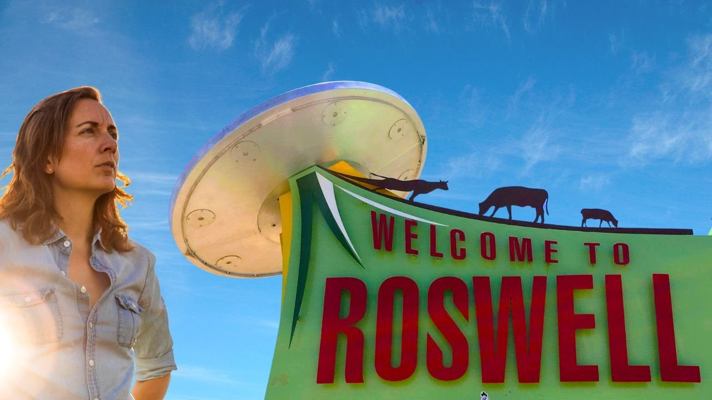

Roughly 75 years ago, the military issued a statement saying they'd captured the remains of a strange flying disc, which had crashed into the desert outside Roswell, New Mexico. But the very next day, they retracted that statement and said the debris had simply come from an ordinary weather balloon. For the most part, Americans shrugged it off and took the government at its word.
But thirty years later, that quick change of story seemed a bit suspicious. Given events like Watergate and Vietnam, Laura Krantz reminds us in this week's video that a lot of people had good reason to start second guessing just about every official message that the government issued. This led a whole generation of UFO researchers to re-examine the original story about what actually crashed in the New Mexico desert in 1947. Just a weather balloon? Or could it have been extraterrestrial visitors?
Does Laura really think there's truth to the alien story? Well, if you've listened to her podcast Wild Thing you probably know that she likes to get her facts straight before jumping to conclusions. Whether or not the government actually found and hid the remains of an intergalactic crash, how we treat that conspiracy is almost as interesting as the possibility of aliens themselves.